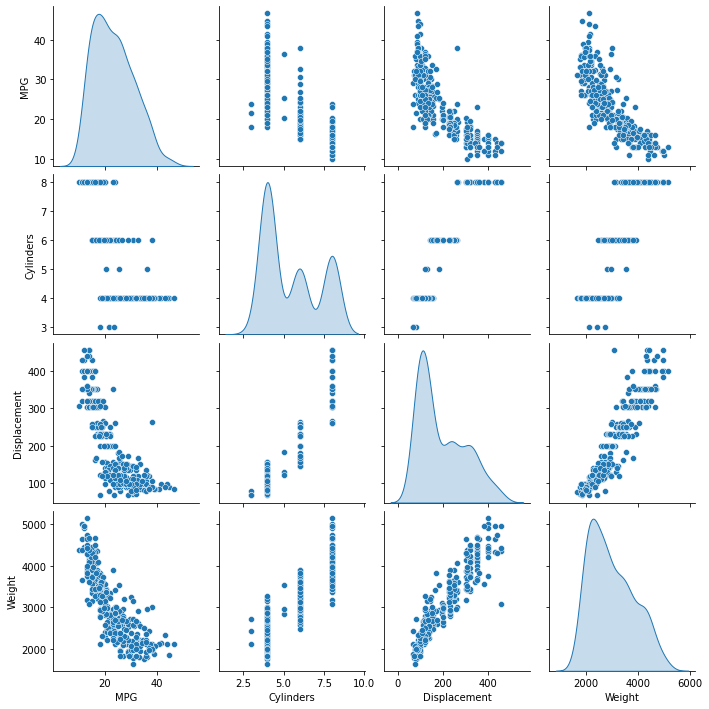
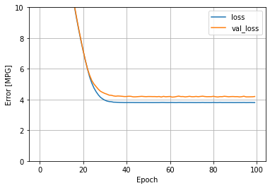
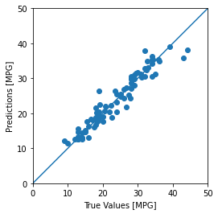
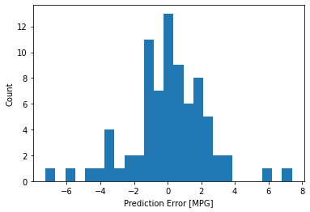

Regresión básica: Predicción de la eficiencia de combustible — 39:59 min
Última modificación: Marzo 1, 2022 | YouTube
Importación de librerías
[1]:
import os
os.environ["TF_CPP_MIN_LOG_LEVEL"] = "2"
import tensorflow as tf
[2]:
!pip3 install --quiet seaborn
WARNING: Running pip as the 'root' user can result in broken permissions and conflicting behaviour with the system package manager. It is recommended to use a virtual environment instead: https://pip.pypa.io/warnings/venv
Preparación del dataset
Descarga
[3]:
import pandas as pd
url = "http://archive.ics.uci.edu/ml/machine-learning-databases/auto-mpg/auto-mpg.data"
column_names = [
"MPG",
"Cylinders",
"Displacement",
"Horsepower",
"Weight",
"Acceleration",
"Model Year",
"Origin",
]
raw_dataset = pd.read_csv(
url, names=column_names, na_values="?", comment="\t", sep=" ", skipinitialspace=True
)
[4]:
dataset = raw_dataset.copy()
dataset.tail()
[4]:
| MPG | Cylinders | Displacement | Horsepower | Weight | Acceleration | Model Year | Origin | |
|---|---|---|---|---|---|---|---|---|
| 393 | 27.0 | 4 | 140.0 | 86.0 | 2790.0 | 15.6 | 82 | 1 |
| 394 | 44.0 | 4 | 97.0 | 52.0 | 2130.0 | 24.6 | 82 | 2 |
| 395 | 32.0 | 4 | 135.0 | 84.0 | 2295.0 | 11.6 | 82 | 1 |
| 396 | 28.0 | 4 | 120.0 | 79.0 | 2625.0 | 18.6 | 82 | 1 |
| 397 | 31.0 | 4 | 119.0 | 82.0 | 2720.0 | 19.4 | 82 | 1 |
Limpieza
[5]:
dataset.isna().sum()
[5]:
MPG 0
Cylinders 0
Displacement 0
Horsepower 6
Weight 0
Acceleration 0
Model Year 0
Origin 0
dtype: int64
[6]:
dataset = dataset.dropna()
[7]:
dataset["Origin"] = dataset["Origin"].map(
{
1: "USA",
2: "Europe",
3: "Japan",
}
)
[8]:
dataset = pd.get_dummies(
dataset,
columns=["Origin"],
prefix="",
prefix_sep="",
)
dataset.tail()
[8]:
| MPG | Cylinders | Displacement | Horsepower | Weight | Acceleration | Model Year | Europe | Japan | USA | |
|---|---|---|---|---|---|---|---|---|---|---|
| 393 | 27.0 | 4 | 140.0 | 86.0 | 2790.0 | 15.6 | 82 | 0 | 0 | 1 |
| 394 | 44.0 | 4 | 97.0 | 52.0 | 2130.0 | 24.6 | 82 | 1 | 0 | 0 |
| 395 | 32.0 | 4 | 135.0 | 84.0 | 2295.0 | 11.6 | 82 | 0 | 0 | 1 |
| 396 | 28.0 | 4 | 120.0 | 79.0 | 2625.0 | 18.6 | 82 | 0 | 0 | 1 |
| 397 | 31.0 | 4 | 119.0 | 82.0 | 2720.0 | 19.4 | 82 | 0 | 0 | 1 |
Particionamiento de los datos
[9]:
train_dataset = dataset.sample(frac=0.8, random_state=0)
test_dataset = dataset.drop(train_dataset.index)
Inspección
[10]:
import seaborn as sns
sns.pairplot(
train_dataset[
[
"MPG",
"Cylinders",
"Displacement",
"Weight",
]
],
diag_kind="kde",
)
[10]:
<seaborn.axisgrid.PairGrid at 0x7f62b135fa90>

[11]:
train_dataset.describe().transpose()
[11]:
| count | mean | std | min | 25% | 50% | 75% | max | |
|---|---|---|---|---|---|---|---|---|
| MPG | 314.0 | 23.310510 | 7.728652 | 10.0 | 17.00 | 22.0 | 28.95 | 46.6 |
| Cylinders | 314.0 | 5.477707 | 1.699788 | 3.0 | 4.00 | 4.0 | 8.00 | 8.0 |
| Displacement | 314.0 | 195.318471 | 104.331589 | 68.0 | 105.50 | 151.0 | 265.75 | 455.0 |
| Horsepower | 314.0 | 104.869427 | 38.096214 | 46.0 | 76.25 | 94.5 | 128.00 | 225.0 |
| Weight | 314.0 | 2990.251592 | 843.898596 | 1649.0 | 2256.50 | 2822.5 | 3608.00 | 5140.0 |
| Acceleration | 314.0 | 15.559236 | 2.789230 | 8.0 | 13.80 | 15.5 | 17.20 | 24.8 |
| Model Year | 314.0 | 75.898089 | 3.675642 | 70.0 | 73.00 | 76.0 | 79.00 | 82.0 |
| Europe | 314.0 | 0.178344 | 0.383413 | 0.0 | 0.00 | 0.0 | 0.00 | 1.0 |
| Japan | 314.0 | 0.197452 | 0.398712 | 0.0 | 0.00 | 0.0 | 0.00 | 1.0 |
| USA | 314.0 | 0.624204 | 0.485101 | 0.0 | 0.00 | 1.0 | 1.00 | 1.0 |
Separación de varaibles independientes y variable objetivo
[12]:
train_features = train_dataset.copy()
test_features = test_dataset.copy()
train_labels = train_features.pop("MPG")
test_labels = test_features.pop("MPG")
Normalización
Estadísticos
[13]:
train_dataset.describe().transpose()[["mean", "std"]]
[13]:
| mean | std | |
|---|---|---|
| MPG | 23.310510 | 7.728652 |
| Cylinders | 5.477707 | 1.699788 |
| Displacement | 195.318471 | 104.331589 |
| Horsepower | 104.869427 | 38.096214 |
| Weight | 2990.251592 | 843.898596 |
| Acceleration | 15.559236 | 2.789230 |
| Model Year | 75.898089 | 3.675642 |
| Europe | 0.178344 | 0.383413 |
| Japan | 0.197452 | 0.398712 |
| USA | 0.624204 | 0.485101 |
Capa de normalización
[14]:
normalizer = tf.keras.layers.Normalization(axis=-1)
[15]:
normalizer.adapt(train_features.values)
[16]:
normalizer.mean.numpy()
[16]:
array([[5.47770691e+00, 1.95318497e+02, 1.04869446e+02, 2.99025171e+03,
1.55592356e+01, 7.58980942e+01, 1.78343967e-01, 1.97452217e-01,
6.24203861e-01]], dtype=float32)
[17]:
import numpy as np
first = np.array(train_features[:1])
with np.printoptions(precision=2, suppress=True):
print("First example:", first)
print()
print("Normalized:", normalizer(first).numpy())
First example: [[ 4. 90. 75. 2125. 14.5 74. 0. 0. 1. ]]
Normalized: [[-0.87 -1.01 -0.79 -1.03 -0.38 -0.52 -0.47 -0.5 0.78]]
Modelo de regresión lineal
Modelo de regresión lineal con una variable
[18]:
horsepower = np.array(train_features["Horsepower"])
horsepower_normalizer = tf.keras.layers.Normalization(
input_shape=[
1,
],
axis=None,
)
horsepower_normalizer.adapt(horsepower)
[19]:
horsepower_model = tf.keras.Sequential(
[horsepower_normalizer, tf.keras.layers.Dense(units=1)]
)
horsepower_model.summary()
Model: "sequential"
_________________________________________________________________
Layer (type) Output Shape Param #
=================================================================
normalization_1 (Normalizat (None, 1) 3
ion)
dense (Dense) (None, 1) 2
=================================================================
Total params: 5
Trainable params: 2
Non-trainable params: 3
_________________________________________________________________
[20]:
horsepower_model.predict(horsepower[:10])
[20]:
array([[ 0.9478705 ],
[ 0.5353313 ],
[-1.7495011 ],
[ 1.328676 ],
[ 1.2017407 ],
[ 0.47186375],
[ 1.4238772 ],
[ 1.2017407 ],
[ 0.31319484],
[ 0.5353313 ]], dtype=float32)
[21]:
horsepower_model.compile(
optimizer=tf.optimizers.Adam(learning_rate=0.1), loss="mean_absolute_error"
)
[22]:
%%time
history = horsepower_model.fit(
train_features["Horsepower"],
train_labels,
epochs=100,
verbose=0,
validation_split=0.2,
)
CPU times: user 3.44 s, sys: 1.47 s, total: 4.91 s
Wall time: 3.63 s
[23]:
hist = pd.DataFrame(history.history)
hist["epoch"] = history.epoch
hist.tail()
[23]:
| loss | val_loss | epoch | |
|---|---|---|---|
| 95 | 3.801955 | 4.175131 | 95 |
| 96 | 3.804615 | 4.175022 | 96 |
| 97 | 3.807124 | 4.178254 | 97 |
| 98 | 3.804233 | 4.180362 | 98 |
| 99 | 3.802713 | 4.196652 | 99 |
[24]:
import matplotlib.pyplot as plt
def plot_loss(history):
plt.plot(history.history["loss"], label="loss")
plt.plot(history.history["val_loss"], label="val_loss")
plt.ylim([0, 10])
plt.xlabel("Epoch")
plt.ylabel("Error [MPG]")
plt.legend()
plt.grid(True)
[25]:
plot_loss(history)

[26]:
test_results = {}
test_results["horsepower_model"] = horsepower_model.evaluate(
test_features["Horsepower"], test_labels, verbose=0
)
[27]:
x = tf.linspace(0.0, 250, 251)
y = horsepower_model.predict(x)
[28]:
def plot_horsepower(x, y):
plt.scatter(train_features["Horsepower"], train_labels, label="Data")
plt.plot(x, y, color="k", label="Predictions")
plt.xlabel("Horsepower")
plt.ylabel("MPG")
plt.legend()
[29]:
plot_horsepower(x, y)

Regresión lineal con varias variables
[30]:
linear_model = tf.keras.Sequential(
[
normalizer,
tf.keras.layers.Dense(units=1),
]
)
[31]:
linear_model.predict(train_features[:10])
[31]:
array([[-0.29592586],
[-0.2598036 ],
[-0.69635236],
[-0.63131523],
[ 0.41776383],
[-0.368325 ],
[ 0.43144387],
[ 2.7167926 ],
[-0.18819278],
[ 0.6319837 ]], dtype=float32)
[32]:
linear_model.layers[1].kernel
[32]:
<tf.Variable 'dense_1/kernel:0' shape=(9, 1) dtype=float32, numpy=
array([[-0.0359925 ],
[-0.4268736 ],
[-0.6422583 ],
[ 0.756022 ],
[ 0.07490122],
[-0.22107112],
[ 0.3194499 ],
[-0.22754335],
[-0.6917452 ]], dtype=float32)>
[33]:
linear_model.layers[1].bias
[33]:
<tf.Variable 'dense_1/bias:0' shape=(1,) dtype=float32, numpy=array([0.], dtype=float32)>
[34]:
linear_model.compile(
optimizer=tf.optimizers.Adam(learning_rate=0.1),
loss="mean_absolute_error",
)
[35]:
%%time
history = linear_model.fit(
train_features,
train_labels,
epochs=100,
verbose=0,
validation_split=0.2,
)
CPU times: user 3.36 s, sys: 1.44 s, total: 4.8 s
Wall time: 3.49 s
[36]:
plot_loss(history)

[37]:
test_results["linear_model"] = linear_model.evaluate(
test_features,
test_labels,
verbose=0,
)
Regresión con una red neuronal profunda
[38]:
def build_and_compile_model(norm):
model = tf.keras.Sequential(
[
norm,
tf.keras.layers.Dense(64, activation="relu"),
tf.keras.layers.Dense(64, activation="relu"),
tf.keras.layers.Dense(1),
]
)
model.compile(
loss="mean_absolute_error",
optimizer=tf.keras.optimizers.Adam(0.001),
)
return model
Regresión no lineal con una sola variable
[39]:
dnn_horsepower_model = build_and_compile_model(
horsepower_normalizer,
)
[40]:
dnn_horsepower_model.summary()
Model: "sequential_2"
_________________________________________________________________
Layer (type) Output Shape Param #
=================================================================
normalization_1 (Normalizat (None, 1) 3
ion)
dense_2 (Dense) (None, 64) 128
dense_3 (Dense) (None, 64) 4160
dense_4 (Dense) (None, 1) 65
=================================================================
Total params: 4,356
Trainable params: 4,353
Non-trainable params: 3
_________________________________________________________________
[41]:
%%time
history = dnn_horsepower_model.fit(
train_features["Horsepower"],
train_labels,
validation_split=0.2,
verbose=0,
epochs=100,
)
CPU times: user 3.97 s, sys: 1.9 s, total: 5.87 s
Wall time: 3.94 s
[42]:
plot_loss(history)

[43]:
x = tf.linspace(0.0, 250, 251)
y = dnn_horsepower_model.predict(x)
[44]:
plot_horsepower(x, y)

[45]:
test_results["dnn_horsepower_model"] = dnn_horsepower_model.evaluate(
test_features["Horsepower"],
test_labels,
verbose=0,
)
Regresión no lineal con varias variables
[46]:
dnn_model = build_and_compile_model(normalizer)
dnn_model.summary()
Model: "sequential_3"
_________________________________________________________________
Layer (type) Output Shape Param #
=================================================================
normalization (Normalizatio (None, 9) 19
n)
dense_5 (Dense) (None, 64) 640
dense_6 (Dense) (None, 64) 4160
dense_7 (Dense) (None, 1) 65
=================================================================
Total params: 4,884
Trainable params: 4,865
Non-trainable params: 19
_________________________________________________________________
[47]:
%%time
history = dnn_model.fit(
train_features,
train_labels,
validation_split=0.2,
verbose=0,
epochs=100,
)
CPU times: user 3.96 s, sys: 1.93 s, total: 5.89 s
Wall time: 3.83 s
[48]:
plot_loss(history)

[49]:
test_results["dnn_model"] = dnn_model.evaluate(
test_features,
test_labels,
verbose=0,
)
Desempeño
Métricas de error
[50]:
pd.DataFrame(
test_results,
index=["Mean absolute error [MPG]"],
).T
[50]:
| Mean absolute error [MPG] | |
|---|---|
| horsepower_model | 3.655423 |
| linear_model | 2.513242 |
| dnn_horsepower_model | 2.963055 |
| dnn_model | 1.700059 |
Pronósticos
[51]:
test_predictions = dnn_model.predict(test_features).flatten()
a = plt.axes(aspect="equal")
plt.scatter(test_labels, test_predictions)
plt.xlabel("True Values [MPG]")
plt.ylabel("Predictions [MPG]")
lims = [0, 50]
plt.xlim(lims)
plt.ylim(lims)
_ = plt.plot(lims, lims)

[52]:
error = test_predictions - test_labels
plt.hist(error, bins=25)
plt.xlabel("Prediction Error [MPG]")
_ = plt.ylabel("Count")

Almacenamiento del modelo
[53]:
dnn_model.save("/tmp/dnn_model")
INFO:tensorflow:Assets written to: /tmp/dnn_model/assets
Recuperación del modelo
[54]:
reloaded = tf.keras.models.load_model("/tmp/dnn_model")
test_results["reloaded"] = reloaded.evaluate(
test_features,
test_labels,
verbose=0,
)
[55]:
pd.DataFrame(
test_results,
index=[
"Mean absolute error [MPG]",
],
).T
[55]:
| Mean absolute error [MPG] | |
|---|---|
| horsepower_model | 3.655423 |
| linear_model | 2.513242 |
| dnn_horsepower_model | 2.963055 |
| dnn_model | 1.700059 |
| reloaded | 1.700059 |